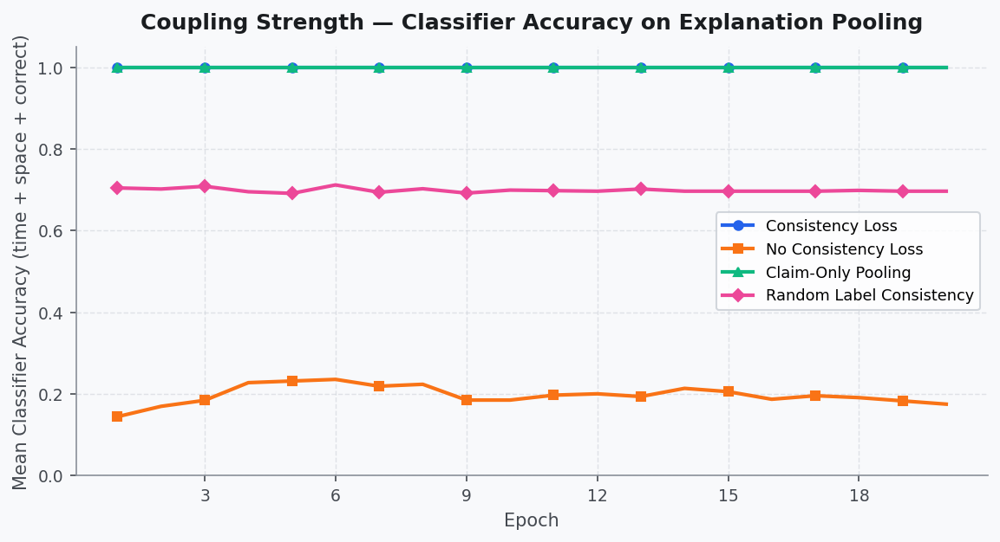

Builds LeanCheck, a dataset of Lean 4 theorems and candidate proofs labeled by the Lean kernel, used as one verifier setting.
Abstract
Language models can generate plausible rationales for their predictions, but these explanations may not faithfully represent the model's internal reasoning. We propose verifier-coupled reasoning, a framework that inserts inline claims into reasoning traces and trains an auxiliary consistency head to predict programmatic verifier outputs from rationale-span hidden states. The central finding is a gap between decodability and faithfulness: consistency training reliably makes verifier information decodable from rationale representations, but decodability does not guarantee faithful generation. In LeanCheck (formal theorem proving), rationale-only and proof-only pooling achieve perfect directional separation under counterfactual conflict. In KataGo (Go engine), commentary spans encode 10-way win-rate buckets at 81% accuracy. Yet in a code setting, the model achieves 98.6% coupling while its generated explanations remain unfaithful: fluent prose with correct structured claims, but describing unrelated algorithms; a controlled pretrained-vs-from-scratch comparison shows the gap is not capacity-driven. Synthetic activation patching confirms causal influence (73-89% vs. 31% baseline), FEVER reveals that evidence-only pooling isolates genuine evidence sensitivity at the cost of raw accuracy, and per-claim analysis shows that consistency loss disproportionately benefits fine-grained claims over binary ones. These results establish that consistency losses are effective diagnostics and representation-shaping tools, but not sufficient conditions for faithful reasoning.
Problem
Language-model rationales can sound plausible without reflecting the model's internal reasoning. Programmatic verifiers check final claims but do not hold the natural-language rationale itself accountable.
Approach
Verifier-coupled reasoning inserts an inline claim after a rationale. An auxiliary consistency head is trained to predict the verifier's output from pooled hidden states over a selected text span. Five settings are tested: synthetic data, LeanCheck (Lean 4 kernel accept/reject labels on templated theorems), KataGo win-rate buckets, code, and FEVER. A ladder of diagnostics (decodability, counterfactual swaps, controls, activation patching) checks progressively stronger forms of coupling.
Results
Consistency training makes verifier information decodable from rationale states in every setting. In LeanCheck, rationale-only and proof-only pooling separate perfectly under counterfactual conflict. In the code setting, coupling reaches 98.6% while generated explanations remain unfaithful, so decodability is not sufficient for faithfulness.

Figure 7: Code coupling training dynamics (V1, 20 epochs). Top left: Coupling strength (classifier accuracy from explanation-span pooling) reaches 1.0 by epoch 2 for the consistency-loss variant and stays there; baselines remain below 0.25. Top right: BLEU-1 and ROUGE-L stay flat near 0.06–0.10 for all variants, prose quality is never learned. Bottom: Counterfactual swap influence is 1.0 from epoc